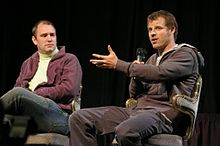

South Park é uma sitcom americana criada por Trey Parker e Matt Stone para o canal Comedy Central. Destinado ao público adulto, o programa tornou-se alvo de debates por suas críticas através de humor negro, cruel, surreal e satírico que abrange uma série de assuntos. A narrativa padrão gira em torno de quatro crianças — Stan Marsh, Kyle Broflovski, Eric Cartman, e Kenny McCormick — e suas aventuras bizarras na cidade-título do programa.
Parker e Stone, que se conheceram na universidade, desenvolveram a série a partir de dois curtas de animação criados por eles em 1992 e 1995. A segunda produção tornou-se um dos primeiros vídeos virais da internet, o que acabou levando ao desenvolvimento do programa. South Park estreou em 13 de agosto de 1997 obtendo êxito instantâneo e alcançando posteriormente as maiores audiências da televisão paga nos Estados Unidos. Apesar de inconsistente em seus índices de audiência, o programa permanece como a atração mais aclamada e duradoura do Comedy Central. Originalmente produzido através de animação de recortes, cada episódio é atualmente realizado em um software que reproduz o estilo característico do programa.
A série está programada para ser exibida até a vigésima terceira temporada, em 2019. South Park recebeu inúmeros prêmios, incluindo cinco Primetime Emmy Awards, um Prêmio Peabody e numerosas inclusões em listas de melhores programas de televisão. A popularidade do programa resultou em um filme: South Park: Bigger, Longer and Uncut que foi lançado em junho de 1999, menos de dois anos após a estreia do show, e tornou-se um sucesso comercial e de crítica. Em 2013, o TV Guide classificou a série como o décimo melhor desenho animado de TV de todos os tempos. South Park é a terceira série animada que está a mais tempo em produção e exibição nos Estados Unidos, logo atrás de Os Simpsons e Arthur.
 Logo após de se conhecerem na turma de cinema da Universidade de Colorado em 1992, Trey Parker e Matt Stone criaram um curta de animação chamado The Spirit of Christmas. Para a produção do filme foi utilizada a técnica de animação de recortes, trazendo protótipos dos personagens principais de South Park, incluindo um personagem parecido com Eric mas chamado "Kenny", um personagem anônimo com características de Kenny e dois personagens quase idênticos com a aparência de Stan e Kyle.
Brian Grade, executivo da rede Fox e amigo mútuo da Parker e Stone, contratou-os para a produção de um curta metragem no formato de um cartão de Natal em vídeo. Produzido em 1995, o segundo curta The Spirit of Christmas trazia mais semelhanças com o estilo da futura série. Para diferenciar os dois filmes, o primeiro passou a ser chamado de Jesus vs. Frosty, e o segundo, Jesus vs. Santa. Grade mandou cópias do vídeo para vários amigos, e a partir daí as cópias começaram a se espalhar incontrolavelmente, inclusive na Internet, onde a produção tornou-se um dos primeiros vídeos virais da rede.
Com a popularidade de Jesus vs. Santa, Parker e Stone passaram a discutir a possibilidade de transformar o curta em uma série de televisão. A Fox recusou o projeto, não querendo exibir um programa que contava com um personagem como Mr. Hankey, um pedaço de fezes falante. A dupla então entrou em negociações com a MTV e o Comedy Central. Parker preferiu ver a infantil produzida pelo Comedy Central, temendo que a MTV pudesse transformá-la em um programa infantil. Doug Herzog, executivo do Comedy Central, assistiu o curta e aprovou sua produção no formato de seriado.
Parker e Stone reuniram uma pequena equipe e passaram três meses criando o episódio piloto, "Cartman Gets an Anal Probe" ("Cartman recebe uma sonda anal"). South Park correu o risco de ser cancelado antes mesmo de ser exibido, devido ao desempenho negativo em testes de público, particularmente entre o feminino. Os curta-metragens, no entanto, continuavam a fazer sucesso na internet, e o Comedy Central concordou em exibir uma sequência de seis episódios. O episódio de estréia foi ar então em 13 de agosto de 1997
Em 2007, a revista Time incluiu South Park em sua lista de "100 Melhores Programas de Televisão de Todos os Tempos", definindo-o como "a melhor fonte de sátiras rápidas e certeiras da América na última década". No mesmo ano, a Rolling Stone nomeou-o o programa mais engraçado da televisão desde sua estréia 10 anos antes. Em 2008, South Park foi nomeado o 12° melhor programa de TV dos últimos 25 anos pela Entertainment Weekly, enquanto a AOL afirmou que ele continha os personagens "mais astutos" de qualquer programa da história ao declará-lo a 16ª melhor série de comédia de todos os tempos. O personagem Cartman foi listado na 10ª posição dos "50 Maiores Personagens de Animação" da TV Guide em 2002, 198ª entre os "200 Maiores Ícones da Cultura Pop" do VH1, 19ª entre os "100 Maiores Personagens da TV" do especial televisivo do canal a cabo Bravo em 2004 e 2ª entre os "Personagens mais Assustadores da TV" da MSNBC em 2005. Na lista de "100 Maiores Desenhos Animados" do Channel 4 em 2004, South Park ficou em terceiro lugar, atrás apenas de Tom and Jerry (2°) e The Simpsons (1°).
Em 2006, o Comedy Central recebeu o Prêmio Peabody em homenagem aos "rigorosos comentários sociais" de South Park e por seu "inegável destemor em satirizar tudo de hipócrita e arrogante na sociedade americana"
South Park venceu o Prêmio CableACE de "Melhor Série de Animação" em 1996, último ano em que a premiação foi realizada. Em 1997, o programa foi indicado ao Prêmio Anne de "Melhor Série de Fim de Noite" e ao Prêmio GLAAD de "Melhor Episódio" por "Big Gay Al's Big Gay Boat Ride", exibido originalmente em 4 de setembro de 1996.
South Park foi indicado ao Prêmio Emmy de "Melhor Programa de Animação (com menos de uma hora de duração)" nove vezes (1998, 2000, 2002, 2004, 2005, 2006, 2007, 2009 e 2010), vencendo três vezes: em 2005 pelo episódio "Best Friends Forever", em 2006 por "Make Love, Not Warcraft" e em 2009 por "Margaritaville". A trilogia de episódios "Imaginationland" venceu o Emmy de "Melhor Programa de Animação (com mais de uma hora)" em 2008.